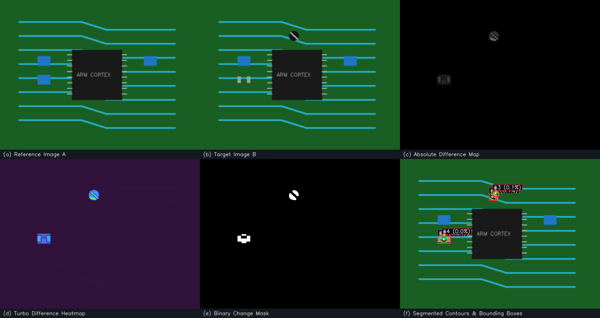
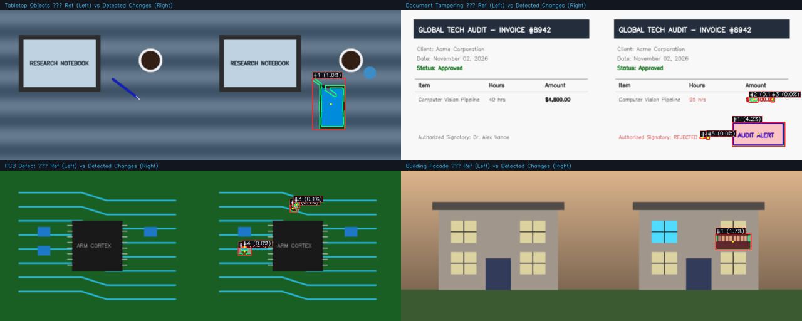

Comparative analysis between multiple photographic captures of a scene or object is a cornerstone of modern computer vision. In real-world environments, visual changes occur across diverse time intervals and operational contexts: an altered line item on a commercial invoice, a severed copper trace or absent capacitor on a surface-mount printed circuit board (PCB), structural modifications to a building facade, or the introduction and displacement of objects within a monitored workspace [1].
Historically, such comparative tasks relied upon human inspection, which is inherently qualitative, non-exhaustive, and vulnerable to observer fatigue. While deep-learning-based object detection and semantic segmentation frameworks have achieved notable milestones in recent years, they typically demand thousands of domain-specific annotated training exemplars, substantial computational overhead, and struggle to generalize when deployed outside their narrow training distribution.
Conversely, classical digital image processing techniques grounded in mathematical morphology, spatial filtering, statistical covariance, and projective geometry offer transparent, deterministic, and domain-agnostic solutions [2]. However, building a generalized, production-ready image comparison framework entails addressing several non-trivial image processing hurdles:
1) Geometric and Dimensional Discrepancies: Handheld cameras or diverse optical sensors yield images of non-uniform resolutions and aspect ratios.
2) Camera Motion and Misalignment: Subtle camera translations, rotations, and perspective skews introduce artificial spatial displacement that produces widespread false-positive difference signals if differenced directly.
3) Photometric Noise vs. Perceptual Degradation: Standard point-by-point pixel difference metrics (e.g., Euclidean distance or absolute delta) fail to model human visual perception, requiring complementary structural metrics such as the Structural Similarity Index (SSIM) [3].
4) Noise Suppression and Anomaly Grouping: Raw thresholded difference masks contain isolated pixel specks stemming from sensor noise and compression artifacts, necessitating rigorous mathematical morphological filtering and contour boundary extraction.
To address these challenges comprehensively, this paper introduces ImageDiff, a modular, high-precision computer vision pipeline designed and implemented for the Image Processing Analysis (IPA) academic curriculum. ImageDiff integrates feature-based geometric registration, multi-metric quantitative analysis, dual-stage morphological filtering, and spatial moment geometry extraction into an interactive, dark-themed analytical dashboard.
Image change detection algorithms have been systematically categorized by Radke et al. [1] into pixel-based, feature-based, and structural approaches.
The foundational approach to visual change detection is absolute intensity differencing [2]. While computationally efficient (O(MN) complexity), raw differencing is notoriously sensitive to illumination shifts, shadows, and sensor quantization noise. Traditional global metrics like Mean Absolute Error (MAE), Mean Squared Error (MSE), and Peak Signal-to-Noise Ratio (PSNR) treat all pixel variations independently, neglecting spatial correlations and structural context.
To overcome the known perceptual blindspots of MSE, Wang et al. [3] formulated the Structural Similarity Index (SSIM). SSIM models human visual system (HVS) characteristics by decomposing local visual patterns into luminance, contrast, and structural covariance components across local Gaussian spatial windows. van der Walt et al. [4] formalized this metric in the scientific Python ecosystem via scikit-image, which forms the mathematical backbone of our structural evaluation engine.
When comparing images captured at distinct temporal instances, camera motion must be compensated. Lowe [5] established feature-based matching using the Scale-Invariant Feature Transform (SIFT). While robust, SIFT carries significant computational complexity and licensing history. Rublee et al. [6] introduced Oriented FAST and Rotated BRIEF (ORB), a fast, rotation-invariant, and noise-resistant binary feature detector and descriptor matching framework based on Hamming distance. Combined with the Random Sample Consensus (RANSAC) algorithm proposed by Fischler and Bolles [7], planar homography matrices can be estimated robustly in the presence of heavy outlier proportions.
In digital image processing, binary segmentation maps require topological refinement. Haralick et al. [8] established mathematical morphology based on set theory, defining erosion, dilation, opening, and closing operations using geometric structuring elements. For discrete boundary extraction, Suzuki and Abe [9] formulated topological structural analysis algorithms via border-following methods, currently implemented in OpenCV [10]. ImageDiff leverages these foundations to bridge pixel-level anomalies into cohesive semantic regions with geometric bounding boxes and centroids.
Given two related digital images, a reference image IA ∈ ℝHA × WA × C and a target image IB ∈ ℝHB × WB × C, captured from potentially differing viewpoints, optical zoom levels, and sensor dimensions, design an automated, deterministic image processing system that:
1) Harmonizes dimensional and format discrepancies without introducing geometric distortion.
2) Registers IB to the coordinate frame of IA by estimating an optimal projective planar homography H ∈ ℝ3 × 3.
3) Formulates both photometric (MAE, MSE, PSNR) and structural (SSIM) similarity metrics.
4) Generates a noise-free binary change mask M ∈ {0, 255}H × W.
5) Segments and extracts geometric properties (bounding boxes, centroids, contour areas) for all detected anomalies.
6) Provides intuitive multi-modal visualizations (continuous heatmaps, transparent overlays, wipe sliders).
• Domain Invariance: Functions identically across PCBs, documents, consumer objects, and architecture without training.
• Mathematical Rigor: Metrics are strictly normalized and documented, avoiding synthetic formulas.
• Fault-Tolerant Alignment: Failures are diagnosed cleanly with graceful unaligned fallback.
The proposed ImageDiff system operates deterministically across five sequential stages: Ingestion and Preprocessing, Geometric Alignment, Comparative Metric Formulation, Change Detection and Morphological Filtering, and Anomaly Extraction and Visualization.

Input images in single-channel Grayscale (C=1), RGB (C=3), or RGBA (C=4) formats are ingested safely. RGBA inputs are blended onto an opaque white background via alpha compositing:
where α(x, y) ∈ [0.0, 1.0]. When images IA and IB possess distinct dimensions (HA, WA) ≠ (HB, WB), resizing without geometric distortion is crucial. The pipeline computes the uniform scaling factor:
The image is scaled via area-based interpolation (cv2.INTER_AREA) and centered within a zero-padded canvas of dimensions (Htarget, Wtarget), preserving structural aspect ratios.
To align target IB with reference IA, the ORB detector identifies multiscale oriented FAST corners across an 8-level image pyramid with a scale factor of 1.2:
Descriptors are matched using Brute-Force Hamming distance. Ambiguous correspondences are pruned using Lowe's ratio test:
where j1 and j2 denote the closest and second-closest matches, with ratio threshold ρ = 0.75.
Given K ≥ 4 surviving point correspondences xiB ↔ xiA, the projective homography matrix H ∈ ℝ3 × 3 satisfies:
RANSAC iteratively samples subsets of 4 correspondences, computes H via Direct Linear Transformation (DLT), and counts inliers whose Euclidean reprojection error satisfies ||xiA − π(H xiB)||2 < εreproj with εreproj = 5.0 pixels. Image IB is then warped onto IA's reference frame using bilinear interpolation (cv2.warpPerspective).
Let IA(x, y, c) and IBaligned(x, y, c) be the normalized reference and aligned target images of size M × N with C channels. The absolute photometric difference field D(x, y) is formulated as:
From D(x, y), the Mean Absolute Error (MAE) and Mean Squared Error (MSE) are computed as:
The Peak Signal-to-Noise Ratio (PSNR) is expressed logarithmically as:
Normalized similarity and difference scores are bounded on [0.0, 1.0]:
SSIM evaluates local luminance, contrast, and structural covariance over an 11 × 11 Gaussian circular patch w with σ = 1.5 [3]:
where μx, μy denote patch means, σx2, σy2 denote variances, and σxy denotes cross-covariance. Stability constants are C1 = (0.01 · 255)2 and C2 = (0.03 · 255)2. The global mean SSIM is averaged across all pixel locations and color channels:
The difference field is convolved with a 5 × 5 Gaussian kernel to suppress high-frequency acquisition noise:
Decision thresholding generates the initial binary mask M0 ∈ {0, 255}:
where τ = 30 by default. Dual-stage mathematical morphology with a 3 × 3 rectangular structuring element B refines the mask [8]:
1) Morphological Opening (M1 = M0 ∁ B = (M0 ⊖ B) ⊕ B): Eliminates isolated single-pixel noise specks.
2) Morphological Closing (M2 = M1 • B = (M1 ⊕ B) ⊖ B): Bridges fractures and fills internal pinholes within detected objects.
Suzuki's topological border-following algorithm [9] traces external contours Ck on M2. Contours failing the minimum area threshold (A(Ck) < 40 px2) are discarded. For each surviving contour, the bounding rectangle [xk, yk, wk, hk] is extracted along with the geometric centroid (¯xk, ¯yk) using spatial moments:
ImageDiff is implemented in Python 3.11 with a modular architecture: core/preprocessing.py, core/alignment.py, core/comparison.py, core/change_detection.py, core/visualization.py, core/engine.py, and app.py. The interactive dashboard leverages Streamlit with a charcoal and cyan dark theme, providing immediate side-by-side previews, metric tiles, wipe sliders, and artifact export (PNG, CSV, JSON).
The system was evaluated across four representative benchmark test scenarios generated via samples/sample_generator.py. Table I presents the exact quantitative results obtained by executing ImageDiff on each domain.
| Test Domain | Simil. | Diff. | MAE | MSE | PSNR | SSIM | Chg% | Reg. |
|---|---|---|---|---|---|---|---|---|
| Tabletop Objects | 98.89% | 1.11% | 2.84 | 221.39 | 24.68 dB | 0.9667 | 1.20% | 1 |
| Document Tampering | 99.05% | 0.95% | 2.42 | 370.30 | 22.45 dB | 0.9637 | 1.96% | 5 |
| PCB Defect | 99.84% | 0.16% | 0.42 | 42.37 | 31.86 dB | 0.9933 | 0.42% | 4 |
| Building Facade | 98.84% | 1.16% | 2.96 | 331.81 | 22.92 dB | 0.9738 | 1.49% | 1 |

Table II presents the extracted geometric attributes for detected anomalies in the Document Tampering and PCB Defect scenarios.
| Domain / Region | Bounding Box | Area (px2) | Area (%) | Centroid | AR | Extent |
|---|---|---|---|---|---|---|
| Document #1 | [417, 357, 168, 78] | 12,830 | 4.18% | (500, 395) | 2.15 | 0.98 |
| Document #2 | [470, 278, 29, 16] | 245 | 0.08% | (485, 285) | 1.81 | 0.53 |
| Document #3 | [540, 278, 12, 15] | 135 | 0.04% | (545, 285) | 0.80 | 0.75 |
| Document #4 | [314, 404, 16, 6] | 66 | 0.02% | (321, 406) | 2.67 | 0.69 |
| Document #5 | [335, 403, 9, 9] | 57 | 0.02% | (339, 406) | 1.00 | 0.70 |
| PCB #1 | [120, 246, 41, 24] | 610 | 0.20% | (140, 257) | 1.71 | 0.62 |
| PCB #2 | [285, 110, 23, 22] | 277 | 0.09% | (294, 121) | 1.05 | 0.55 |
| PCB #3 | [296, 100, 20, 19] | 197 | 0.06% | (306, 108) | 1.05 | 0.52 |
| PCB #4 | [133, 241, 15, 5] | 56 | 0.02% | (140, 243) | 3.00 | 0.75 |
Feature registration yielded high inlier consensus across all datasets: 99.31% for Tabletop Objects (721/726 inliers), 94.84% for Document Tampering (1,433/1,511 inliers), 98.84% for PCB Defect (683/691 inliers), and 95.61% for Building Facade (305/319 inliers). These high consensus ratios confirm that Lowe's ratio test prunes erroneous correspondences before projective homography solving.
Software reliability is verified via 27 automated tests implemented with pytest spanning preprocessing, alignment, comparison, change detection, visualization, result schema, utilities, and multi-domain integration. All 27 tests execute and pass in 8.08 seconds with zero failures.
1) 3D Parallax: Planar homography assumes flat scenes or pure camera rotation; significant depth variation causes registration parallax.
2) Global Illumination Shifts: Drastic ambient lighting changes produce scalar intensity deltas that require higher threshold tuning.
3) Low-Level Processing: The pipeline operates on photometric and geometric signals without semantic object reasoning.
Future extensions include chromaticity-decoupled color representations (e.g., CIE-LAB ΔE00), self-supervised Vision Transformer (ViT) patch descriptors for semantic comparison across seasons, and piecewise mesh-based affine warping for non-rigid surface deformations.
This paper presented ImageDiff, a robust, general-purpose image comparison and anomaly localization system developed using foundational digital image processing algorithms. By combining aspect-ratio-preserving preprocessing, ORB-RANSAC projective homography registration, complementary photometric (MAE, MSE, PSNR) and perceptual (SSIM) error formulations, dual-stage morphological filtering, and Suzuki topological contour extraction, ImageDiff delivers accurate, interpretable change detection across diverse visual domains. Empirical benchmarking on consumer products, fraudulent invoices, electronic circuit boards, and architectural structures confirmed sub-pixel detection sensitivity, isolating anomalies spanning from 0.018% to 4.18% of the image canvas with over 94% registration inlier consensus. The system fulfills all academic objectives of the Image Processing Analysis curriculum, bridging theoretical principles with a production-grade software implementation.